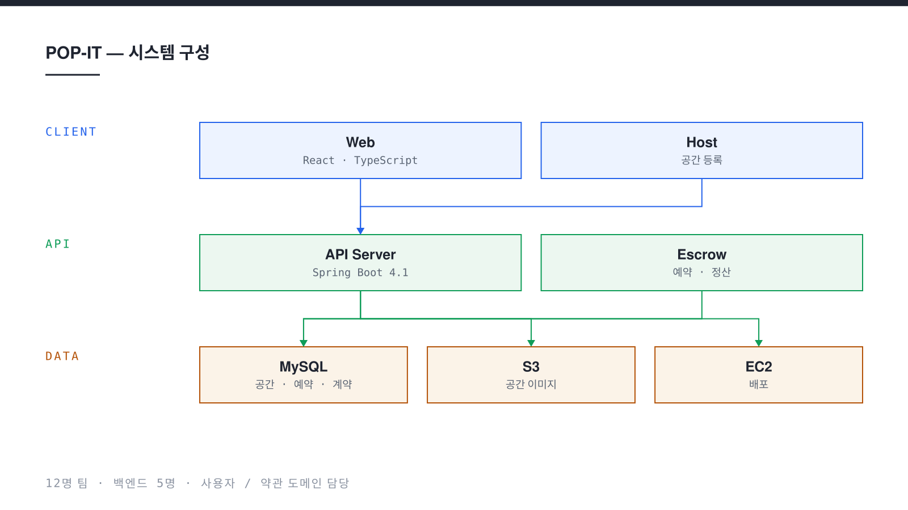

비어 있는 상업 공간과 팝업스토어를 여는 브랜드를 잇는 중개 플랫폼이다. 공간을 가진 호스트가 자리를 등록하면, 브랜드가 기간을 골라 예약하고 계약과 정산까지 한 서비스 안에서 끝낸다. 연합동아리 UMC 10기에서 12명이 한 학기 동안 만들었고, 나는 백엔드에서 사용자와 약관 도메인을 맡았다.
- 기간
- 2026.03 — 2026.08
- 역할
- 백엔드 · 회원 가입 / 로그인 · 약관 동의
- 팀
- 팝잇 · 12명 (백엔드 5명)
- 스택
- Java 17, Spring Boot 4.1, Spring Security, JPA, MySQL, AWS EC2 · S3
- 성과
- UMC 10th DEMO DAY 대상
Problem
팝업스토어 자리를 구하는 일은 지금도 대부분 사람이 붙어서 한다. 브랜드는 부동산과 지인을 거쳐 빈 공간을 수소문하고, 공간을 가진 쪽은 짧게 빌려 줄 상대를 찾지 못해 몇 달을 비워 둔다. 양쪽이 만나도 기간 · 금액 · 원상복구 조건을 문서로 다시 맞춰야 하므로 계약까지 시간이 오래 걸린다.
거래 금액이 크고 기간이 짧은 탓에 신뢰 문제도 같이 따라온다. 선입금 후에 공간이 취소되거나, 반대로 브랜드가 나타나지 않는 경우를 서비스가 감당해야 했다.
Approach
도메인을 먼저 쪼갠 뒤에 코드를 썼다. 공간 · 예약 · 계약 · 정산 · 결제 · 이용권 · 찜 · 사용자 · 약관을 각각 독립된 패키지로 두고, 패키지 사이는 서비스 인터페이스로만 부른다. 다섯 명이 동시에 작업해도 같은 파일에서 충돌하지 않게 만드는 것이 목적이었다.
돈이 오가는 구간은 에스크로로 묶었다. 결제 금액을 서비스가 보관하다가 이용이 끝난 뒤에 호스트에게 정산한다. 예약 상태와 정산 상태를 따로 두어, 예약이 취소되어도 이미 일어난 결제 기록은 지워지지 않는다.
Result
공간 등록부터 예약 · 계약 · 정산까지 이어지는 전 구간을 AWS EC2에 올려 데모데이에서 시연했다. 프론트엔드 네 명이 붙은 웹 클라이언트와 같은 API를 쓴다.
NE(O)RDINARY 너디너리 페스티벌에서 열린 연합동아리 UMC 10th DEMO DAY에서 대상을 받았다.

Implementation
회원 가입과 로그인
이메일 가입과 소셜 로그인을 하나의 사용자 테이블로 받는다. 같은 사람이 두 경로로 들어와도 계정이 갈라지지 않도록 이메일을 기준으로 묶고, 비밀번호는 해시로만 저장한다. 인증이 끝나면 토큰을 발급해 이후 요청은 서버가 세션을 들고 있지 않는다.
약관을 데이터로 다루기
약관 문구를 코드에 적지 않고 테이블에 둔다. 필수 · 선택 여부와 버전이 행마다 붙어 있어, 약관이 개정되면 새 버전을 한 줄 추가하는 것으로 끝난다. 동의 이력은 사용자와 약관 버전을 함께 기록하므로, 누가 어느 시점의 어떤 문구에 동의했는지 나중에도 되짚을 수 있다.
terms 약관 원문 · 버전 · 필수 여부 user_agreement 누가 · 어느 버전에 · 언제 동의했는지 user_activity 로그인 · 탈퇴 등 계정 이력
도메인별 패키지 분리
domain 아래에 space · reservation · contract · escrow · payment · pass ·
wishlist · facility · user · terms 패키지를 두고, 공통 설정과 예외 처리는 global로 모았다.
담당이 나뉘어 있어 병합 충돌이 거의 없었고, 리뷰할 때 볼 범위도 좁아졌다.
에스크로 정산
결제는 즉시 호스트에게 가지 않는다. 서비스가 금액을 보관하다가 이용 종료 뒤에 넘긴다. 예약 · 결제 · 정산이 각각의 상태를 갖기 때문에, 중간에 취소가 끼어들어도 어느 단계까지 진행됐는지가 기록에 남는다.
Retrospect
- 열두 명이 움직이는 프로젝트에서는 코드보다 경계를 먼저 정하는 쪽이 훨씬 빨랐다.
- 약관을 테이블로 옮긴 덕분에 개정 요청이 배포가 아니라 데이터 추가로 끝났다.
- 인증은 기능 자체보다, 두 경로로 들어온 같은 사람을 하나로 묶는 규칙을 정하는 일이 어려웠다.
- 돈이 걸린 흐름은 성공 경로보다 취소 · 환불 경로를 먼저 그려야 한다는 것을 배웠다.
- 남은 과제는 테스트 코드와 배포 자동화다. 데모데이 일정에 밀려 수동 배포로 마감했다.